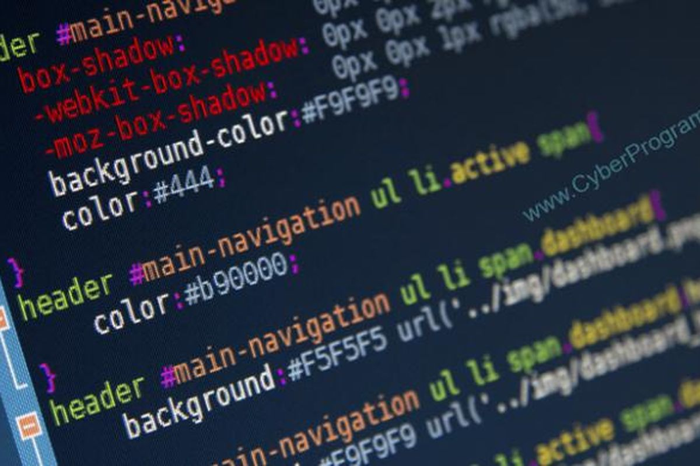

Menjadi mahasiswa Sistem Informasi membuat saya semakin akrab dengan dunia pemrograman. Konsistensi dalam belajar adalah kunci utama. Walaupun terkadang sulit, hasilnya sangat memuaskan ketika berhasil menyelesaikan suatu program. Awalnya memang membingungkan, tapi setelah terbiasa, rasa percaya diri mulai tumbuh.
"Kegagalan adalah bumbu yang memberi rasa kesuksesan." -Truman Capote
Referensi: w3schools.com